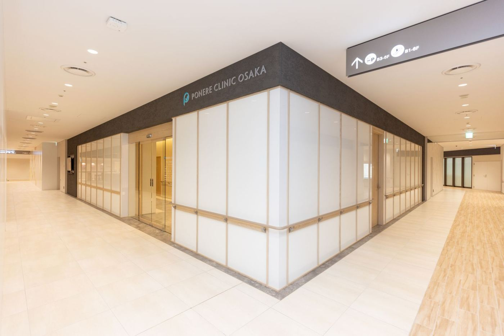
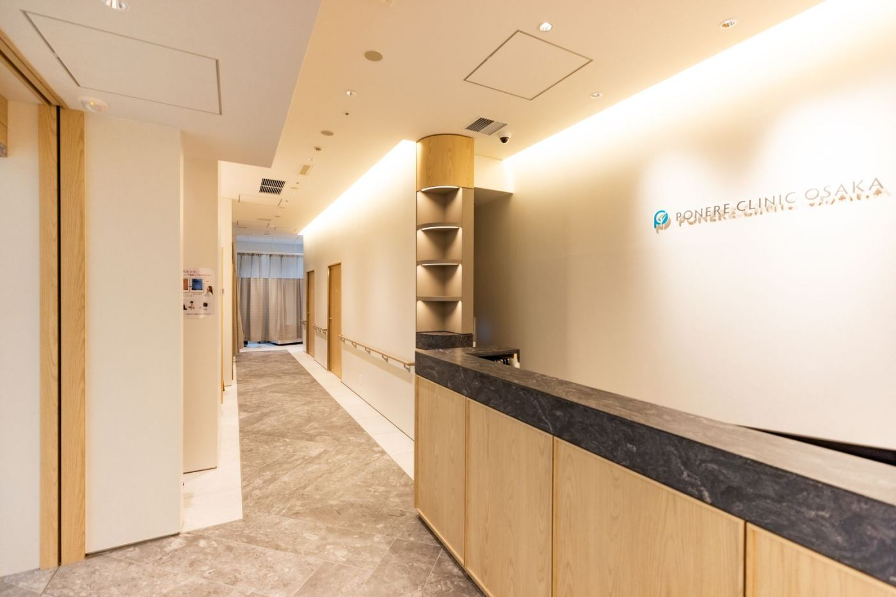
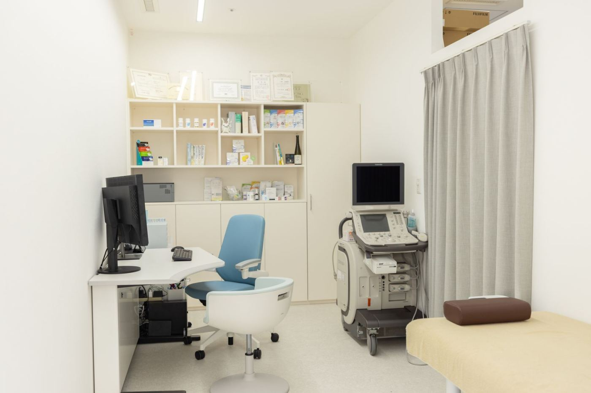

がんは日本人の死因の第1位です。胃がん・大腸がんは、かかる人数も亡くなる人数も、男女とも上位に入っています。


JR大阪駅の西口改札を出て、KITTE大阪のエレベーターで6階へ。雨の日も濡れずにお越しいただけます。
検査日は火・木・日。日曜は10時から19時まで受け付けています。平日にお休みを取りにくい方も、日曜に受けていただけます。
内視鏡検査を女性医師が担当します。担当医の資格・経歴は、医師紹介でご案内します。
予約・問診・検査の説明を、中国語でご案内します。対応できる範囲は、お問い合わせください。

院長は婦人科腫瘍専門医です。内視鏡検査と、子宮頸がん検診などを、同じ日にまとめて受けられます。